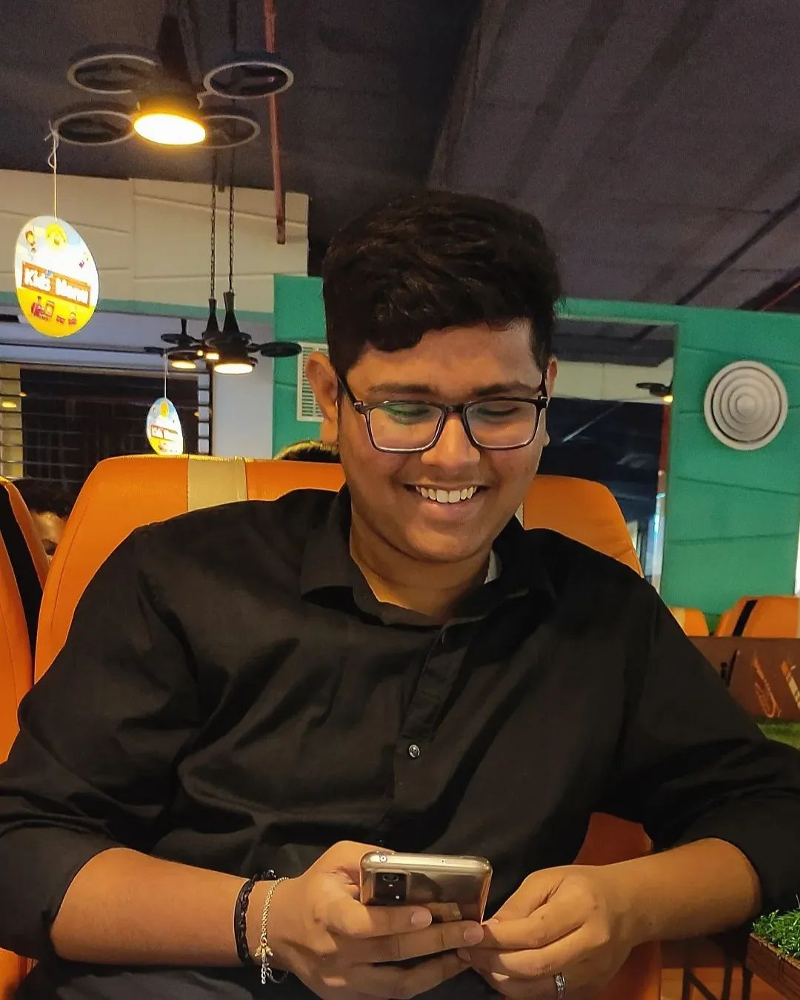

PULI MANOJ KUMARB-tech student at IIT BHUBANESHWAR. |
 |
Listening to music is a hobby and is probably one of the best hobbies we can think of. Learning another language can be easy when you like music.
I like to cook for myself and others aswell. It gives me some fun and motivation.
I like to know facts and learn new things.
Playing BGMI. When i start playing, I can't control myself that I play for hours and hours.